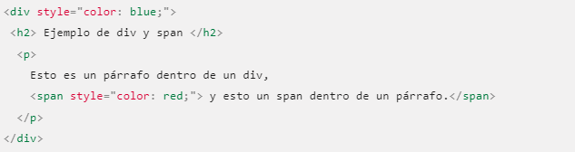
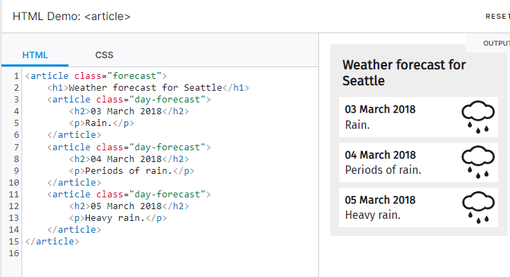
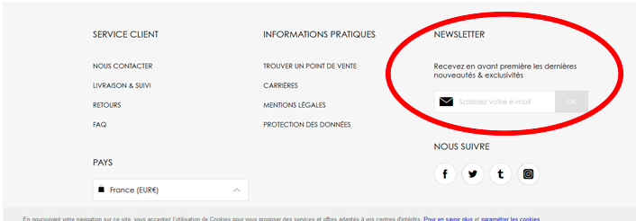
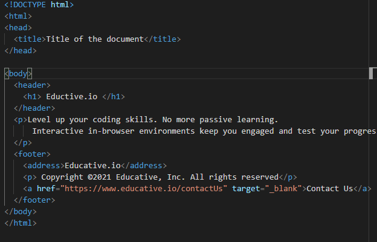

Div
No se tiene un significado especial es simple contendor que permite agregar información es decir por ejemplo si deseas editar solo eso de texto lo pones en un contenedor de div y listo.
Sin embaargo este div tiene otra etiqueta aparte que es la de span
Es aquella que es para definir que es sub div del div pero no es necesario
Article
Es aquel codigo que se reutilzara sin embargo va hacer independiente unos ejemplos son:foro , articulo de revista , comentario de usuario o cualquier contenido independiente
Aside
Este es parecido ya que igual es contenido independiente sinembargo este es tan solo de la página principal , algunos ejemplos son : anuncios , enlaces otro tipo de tipografía
Body
Como se sabe es la principal ya que permite que se muestre el contenido en la página y el usuario lo pueda visualizar
Footer
Es donde se pone el pie de págiane s decir esta la direccion , o del contacto el correo y aparecen la mayoria de veces a bajo algunos ejemplos son
Tambien se utiliza dentro de esa etiqueta la de address : que pone la dirección en cursiva y agrega un descanso después de la dirección.
Header
Introducción del contenido , tabla de contenidos
Main
Representa el contenido principal de un documento no puede repetirse
Nav
En esta es facil puedes ponerlo en el menú principal de tu página , enlaces a otras páginas
Section
El elemento section hace referencia a cada uno de los bloques genéricos de un gran contenido.
Por ejemplo, dentro de la noticia de un periódico que tenemos un titular (probablemente con un h1)
y varios subtítulos (seguramente con varios h2 – h6),
cada uno de estos bloques probablemente sea un section
Ejemplos variados podrían ser los distintos capítulos, diferentes pestañas dentro de una página o las distintas
partes de una tesis. En una página web podría ser la introducción, las noticias y la información de contacto.
En general el section queda bastante relegado al elemento article que le da más sentido al contenido en sí. La gran diferencia
entre section y article es que el section forma parte de algo, y el article es el algo en sí mismo